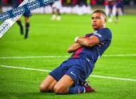
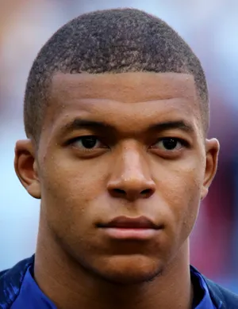

WELLCOME TO MY SPROTS WEBSITE

Wearing the France number 7 jersey,
Griezmann is showing great skill and
talent in his game.
Since the 2018 World Cup, Griezmann
has been playing with extraordinary ski
ll and skill. His extraordinary running an
d dribbling with the ball at his feet has tou
ched the hearts of thousands of fans. He is pl
aying amazingly in this World Cup as well. C
urrently, France's strong opponent in the semi
-finals is Morocco. Good wishes for France and
Grismann.
 
has been playing with extraordinary ski
ll and skill. His extraordinary running an
d dribbling with the ball at his feet has tou
ched the hearts of thousands of fans. He is pl
aying amazingly in this World Cup as well. C
urrently, France's strong opponent in the semi
-finals is Morocco. Good wishes for France and
Grismann.
Kylian Mbappé is a symbol of
extraordinary skill and skill in
football
extraordinary skill and skill in
football
Since the 2018 World Cup, Kylian Mbappe has been playing with extraordinary skill and skill. His extraordinary running and dribbling with the ball at his feet has touched the hearts of thousands of fans. At the age of 24, he scored 8 goals in the World Cup. He is playing amazingly in this World Cup as well. Currently France's strong opponent in the semi-finals is Morocco. Good wishes for France and Kylian Mbappé.
Write to T K Goswami
Since the 2018 World Cup, Kylian Mbappe has been playing with extraordinary skill and skill. His extraordinary running and dribbling with the ball at his feet has touched the hearts of thousands of fans. At the age of 24, he scored 8 goals in the World Cup. He is playing amazingly in this World Cup as well. Currently France's strong opponent in the semi-finals is Morocco. Good wishes for France and Kylian Mbappé.
Write to T K Goswami
« Previous Next » ‹ ›